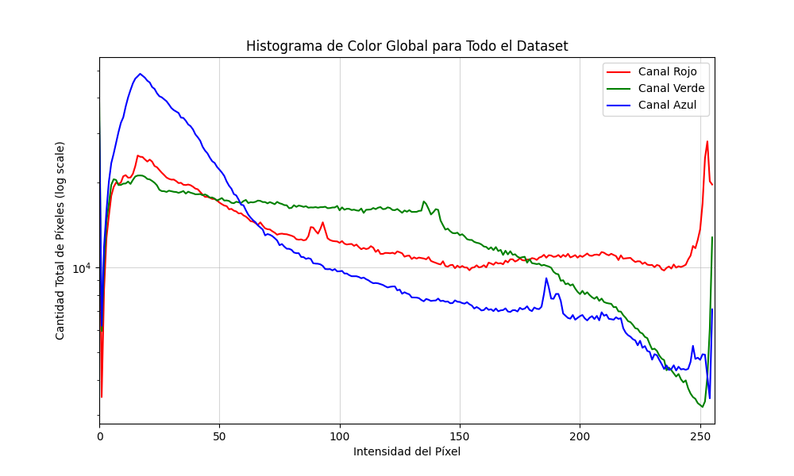
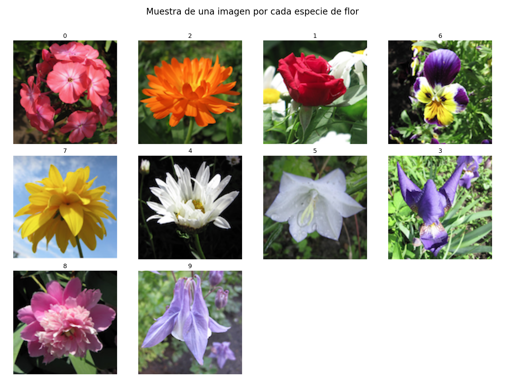

# import cv2
# # Selecciona una imagen
# one_image = my_images[0]
# gray_image = cv2.cvtColor(one_image, cv2.COLOR_RGB2GRAY)
# fig, axes = plt.subplots(1, 2, figsize=(10, 5))
# axes[0].imshow(one_image)
# axes[0].set_title("Original")
# axes[0].axis('off')
# axes[1].imshow(gray_image, cmap='gray')
# axes[1].set_title("Escala de Grises")
# axes[1].axis('off')
# plt.show()pre TP2: Agrupamiento de imágenes
Data Mining en Ciencia y Tecnología - Reporte de Soluciones
1 1. Introducción
Aquí puedes escribir una breve introducción al trabajo práctico, similar a la que se encuentra en el enunciado. Puedes explicar el contexto del problema de agrupamiento de imágenes y la importancia del preprocesamiento de datos en este dominio.
2 2. Objetivos
En esta sección, enumera los objetivos principales del trabajo, tal como se describen en el enunciado. El objetivo es familiarizarse con el procesamiento de imágenes y la preparación de un dataset para el análisis de agrupamiento.
3 3. Estructura de los datos
Describe brevemente el conjunto de datos utilizado. Menciona el origen de los datos (Kaggle), el número de imágenes y clases, y las características de las imágenes (dimensiones, formato, etc.).
4 4. Preprocesamiento de los datos
Esta sección documentará los pasos de preprocesamiento aplicados a las imágenes.
4.1 4.1. Carga de datos y verificación
El dataset utilizado consiste en 210 imágenes en formato png. Se analizó el tamaño de cada imagen hallando que una de las imágenes (0208.png) no correspondía al tamaño estándar del dataset: dimensiones 208 x 208, en vez de 128 x 128. Dicha imagen fue achicada usando el metodo cv2.resize con el método de interpolación INTER_AREA que ajusta el valor del nuevo pixel como promedio del area original.
Luego de este procesamiento inicial se analizó la distribución de valores de cada canal para todas las imagenes. En la figura 1 se verifica que todos los valores para los tres canales de las imágenes se distribuyen entre 0 y 255.
4.1.0.1 Figura 1. Histograma global de colores para el dataset completo

4.2 4.2. Exploración de subconjuntos por especie
El dataset de las imágenes contiene las etiquetas correspondientes a cada una. Se visualiza una imagen por especie a fines exploratorios de entender la representación visual de cada especie en la figura 2.
4.2.0.1 Figura 2. Grilla de imágenes de cada especia

5 5. Manipulación de datos
Esta sección cubre varias manipulaciones aplicadas a las imágenes.
5.1 5.1. Conversión a escala de grises y binarización
Muestra una imagen original a color, su versión en escala de grises. Luego, explica verbalmente el proceso de binarización (convertir a blanco y negro) y, si lo deseas, muestra el resultado de aplicar un umbral.
Explicación de la binarización:
Escribe aquí tu explicación sobre cómo funciona la binarización a partir de una imagen en escala de grises. Menciona el concepto de umbral (threshold).
5.2 5.2. Generación de imágenes aleatorias
Implementa y muestra los resultados de las dos formas de generación de imágenes aleatorias solicitadas: mezclando píxeles y combinando partes de otras imágenes.
# # Código para generar y mostrar las imágenes aleatorias5.3 5.3. Aplicación de filtros
Aplica al menos dos tipos de filtros diferentes a una imagen. Muestra los resultados y explica en qué consisten los filtros y en qué escenarios de aplicación sería útil cada uno.
# from skimage import filters
# # ... tu código para aplicar y mostrar filtros ...
# # ej. filters.gaussian(), filters.sobel()Discusión sobre filtros:
Explica aquí los filtros que usaste, cómo funcionan y para qué sirven.
5.4 5.4. Imagen promedio
Calcula y visualiza la imagen promedio de todo el dataset. Luego, calcula la imagen promedio para cada especie y discute si los promedios permiten distinguir entre especies.
# # ... tu código para calcular y mostrar las imágenes promedio ...Análisis de promedios:
Discute tus hallazgos aquí. ¿Son distinguibles los promedios?
6 6. Búsqueda de features
Análisis de características extraídas de las imágenes.
6.1 6.1. Distribución de píxeles
Analiza y grafica las distribuciones de los valores de los píxeles (histogramas de color) para cada especie. Discute si estas distribuciones son suficientes para diferenciar algunas de las clases.
# # ... tu código para graficar los histogramas de RGB por especie ...Análisis de distribución de píxeles:
Comenta si observas patrones distintivos en los histogramas de color para las diferentes especies.
6.2 6.2. Análisis de Componentes Principales (PCA)
Realiza un análisis de componentes principales sobre el conjunto de imágenes. Proyecta los datos en las dos primeras componentes principales y grafica el resultado, coloreando cada punto según su etiqueta de especie. Analiza si PCA permite una buena separación de las clases.
# from sklearn.decomposition import PCA
# from sklearn.preprocessing import StandardScaler
# # ... tu código para aplanar imágenes, escalar y aplicar PCA ...
# # ... luego, el código para graficar el scatter plot de PC1 vs PC2 ...Análisis de PCA:
Discute si las especies forman grupos separables en el espacio de las componentes principales. ¿Qué te dice esto sobre la estructura de los datos?
7 7. Conclusiones
Resume los resultados más importantes de tu trabajo. ¿Qué aprendiste sobre el procesamiento de imágenes y la preparación de datos para el clustering? ¿Qué técnicas fueron más útiles?
8 Referencias
Aquí puedes listar las referencias que hayas utilizado, como la documentación de las librerías, artículos o tutoriales.